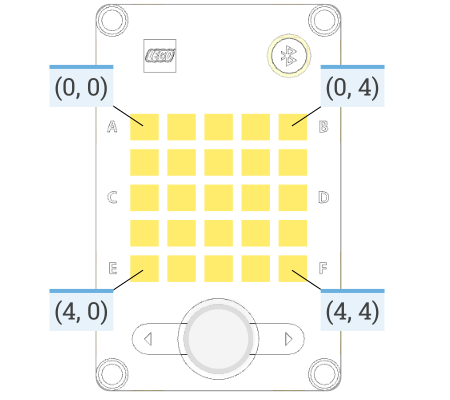

- explore the output features of the Spike Prime Hub
- change the status light colour
- display images and text on the light matrix
- make sounds using the hub speaker
:class: important
All Pybricks commands are listed in the **[Pybricks documentation](https://docs.pybricks.com/en/stable/index.html)**. You can also find it in the right-hand panel of the Pybricks IDE.
The Spike Prime Hub has three ways to produce output:
:class: note
Think of a robot exploring a room on its own.
When it uses sensors to detect a wall ahead — that's **input**. The robot is collecting information.
When it turns left to avoid the wall — that's **output**. The robot is acting on that information.
**Input** = gathering information. **Output** = doing something with it.
The status light sits around the power button. By default it is turned off.
| Function | What it does |
|---|---|
light.on(color) |
Turns the light on at a chosen colour |
light.off() |
Turns the light off |
light.blink(color, durations) |
Blinks the light on and off at set time intervals |
light.animate(colors, interval) |
Cycles through a list of colours, one at a time |
hub_light.py:linenos:
- **lines 3–7** → imports all Pybricks commands for your robot
- **lines 9–10** → creates a PrimeHub object and names it `hub`
- **line 14** → starts an endless loop
- **line 15** → sets the status light to `MAGENTA`
- see the **[colour documentation](https://docs.pybricks.com/en/stable/parameters/color.html#color)** for all available colours
- **line 16** → waits 1000 milliseconds (1 second)
- **line 17** → blinks `RED`: on 500ms → off 250ms → on 500ms → off 250ms
- **line 18** → waits 1500 milliseconds
- **line 19** → animates through `GREEN`, `WHITE`, then `ORANGE`, each showing for 1000ms
- **line 20** → waits 3000 milliseconds
- **line 21** → turns the light off
- **line 22** → waits 1000 milliseconds
:class: caution
- can you display different colours?
- can you change the timing of the blink?
- can you change the timing of the animation?
- what happens when you comment out (put a `#` in front) all the `wait` functions?
The Spike Prime Hub has a five by five light matrix that can be used to display text and images, or individual pixels (light) can be accessed using their coordinates (see below).

Pybricks has eight functions for the Light Matrix
display.orientation(up) → Sets the orientation of the light matrix display.display.off() → Turns off all the pixels.display.pixel(row, column, brightness=100) → Turns on one pixel at the specified brightness.display.icon(icon) → Displays an icon, represented by a matrix of brightness: % values. A list of icons can be found heredisplay.animate(matrices, interval) → Displays an animation made using a list of images.display.number(number) → Displays a number in the range -99 to 99.display.char(char) → Displays a character or symbol on the light grid.display.text(text, on=500, off=50) → Displays a text string, one character at a time, with a pause between each character.The code below uses all eight functions for the light matrix.
light_matrix.py:linenos:
- **lines 3 - 7** → imports all the Pybricks command for use with your robot
- make sure to add `Icon` to the end of **line 5**
- **lines 9 - 10** → creates a PrimeHub and names it `hub`
- **line 15** → creates an endless loop
- **lines 16 - 27** → changes which side of the hub is considered up and then displays the up arrow.
- **lines 29 - 30** → turns the display off for 1 second
- **lines 32 - 37** → turns on a number of pixels to show the meh face
- **lines 29 - 40** → turns the display off for 1 second
- **line 42** → makes an `Icon` list
- **line 43** → displays each icon in the icon list for 500ms
- **line 44** → waits for a second
- **lines 46 - 47** → turns the display off for 1 second
- **lines 49 - 56** → displays numbers and characters
- **lines 58 - 59** → turns the display off for 1 second
- **line 61** → displays the text `C3PO`
- **lines 63 - 54** → turns the display off for 2 seconds
:class: caution
- can you make the `Icon.HAPPY` spin around the display?
- can you change the meh face so the mouth uses the entire screen and the eyes are four pixels big?
- what happens if you comment out all the `wait` functions?
The Prime Hub has a speaker built in, which can be used to produce sounds.
The hub's speaker has three functions:
speaker.volume(volume) →
speaker.beep(frequency=500, duration=100) → Play a beep/tone.speaker.play_notes(notes, tempo=120) → Plays a sequence of musical notes.The example below uses the three speaker functions:
speaking.py:linenos:
- **lines 3 - 7** → imports all the Pybricks command for use with your robot
- **lines 9 - 10** → creates a PrimeHub and names it `hub`
- **line 15** → creates an endless loop
- **line 17** → sets the speaker volume to 100%
- **lines 18 - 19** → read the current volume level and assigns it to `current_volume` then display it to the light matrix
- **line 20** → play a tone of 440Hz for 500ms
- **line 22** → sets the speaker volume to 50%
- **lines 23 - 24** → read the current volume level and assigns it to `current_volume` then display it to the light matrix
- **line 25** → play a tone of 440Hz for 500ms
- **lines 27 - 35** → a list containing the notes for Oh When The Saints
- **line 37** → play the notes in the `oh_when_the_saints` list at a tempo of 180bpm
:class: caution
- seeing what is the lowest volume beep you can hear
- seeing what is the lowest pitch beep you can hear
- seeing what is the highest pitch beep you can hear
- make the hub play a different tune